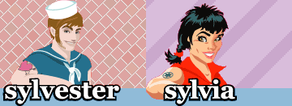

 |
| 21. Januar 2003 |
Homosar från hela landet var i Åre för att åka skidor, pulka, hundspann och naturligtvis festa.
| Ramona Macho och Dennis Agerblad |
 |
| Foto,Text: Maria Näslund |
Reference:
www.sylvia.se/content/article.asp?itemid=1129
Print denne side